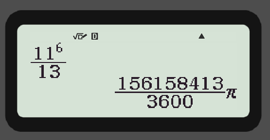
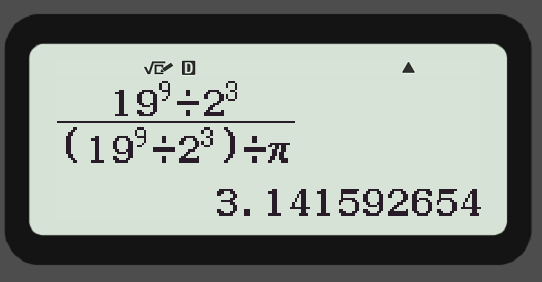

π is rational, or is it?
Disclaimer: π is irrational. Duh doy. We’ve proved it over and over and over again, but this isn’t really about π being rational or not. No no. This is about how mysterious the simplest of technologies tend to be even today when it feels like we’ve mastered technology. But seriously, π ISN’T rational, don’t get any ideas.

The Confusion
Try this. Open up your calculator (a physical one) and type in 116 / 13 and look at the solution carefully. Chances are, (possibly if you’re using a CASIO scientific calculator) you’re getting a number in terms of π. So, did we just prove that π is rational? Case closed? Well, no.
Let’s bring Alice and Bob to help us grasp this. Alice wants to contact Bob and ask him out for coffee, but she’s afraid Hac Erman would intercept their messages and come to the café too, which would just be horrendous for Alice and Bob (Hac is a HUGE pain in the butt). Alice and Bob decide to use the RSA encryption method to talk. Initially, Alice sends Bob a simple plain text message: “Hey, I wanna talk.”. This intrigues Hac, naturally, but Alice doesn’t care.

We KNOW π is not rational so why is this calculator which is supposed to be our guide in our mathematical endeavours beg to differ? We… don’t… know.
A deeper dive.
As one of my friends said after staring at this solution for an hour, “This is nonsense” and it is. CASIO, what’s wrong with you? Is this the illuminati? Maybe. Maybe not. Modern calculators use approximations and weird complicated algorithms to give you the answers you deserve. Obviously, these calculators are made by us so we should be able to find the “glitch” and fix it, right? We tried. This problem is not very young, too. It originated from a reddit post when a student was randomly punching in values in their calculator and came across this miracle. That’s unfortunate, as well, because now we don’t know WHY this division does so. We really don’t know what goes inside the calculator. We’ve programmed it so that it can solve most problems easily but it’s problems like these that really highlight the flaw(s). We cannot change the programming because it works perfectly for everything. The only way out of this would be to understand WHY this happens. We don’t have an answer yet but here are some theories.
The simplest solution that comes to mind is that maybe this is a really close approximation of π so the calculator feels best to just print out π. No. The π in this solution is accurate to the first 12 digits of π, which is undoubtedly REALLY close but try this: 199 / 23. This answer is accurate to the first 15 digits of π but the calculator just spits out the approximate value. Why? What’s up?

Okay, so it’s not the π approximation trick. Then what? Maybe there’s something wrong with the numbers? The number 3600. If you take any gibberish number (not too big) and divide it by 3600, you’ll get gibberish (duh). HOWEVER, if you take some gibberish number (not too big) and divide it by 3600 and then multiply it by π, it gives you an answer in the multiple of π. That might seem like an obvious thing but try dividing the same gibberish by some other number (other than 3600), you get gibberish.
What’s special about 3600? Perhaps, nothing. If you try a factor of 3600, like 240, it works in the same way. The lowest denominator seems to be 15, mysteriously. Note how everything is just a conspiracy theory now. Now what? There are only a few factors of 3600 what if we go for a bigger number? And sure enough 25200 also works (3600 is a factor of 25200).
Just conspiracy theories?
Well yeah, we still have NO idea why this happens and if you do have any leads please reach out to me. It baffles me that something that we created can be this mysterious and that makes all this so much more interesting. Maybe it’s a CASIO thing. Maybe it’s a 3600 thing. Maybe something about the nature of pi? Maybe all of those. We have no idea and as scary as the “we have no idea” might sound, it’s quite thrilling.